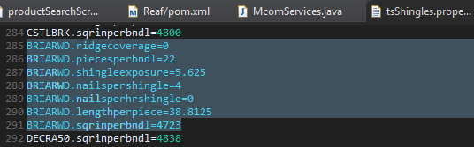
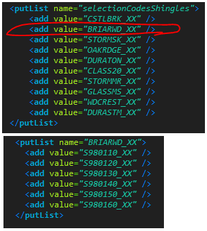
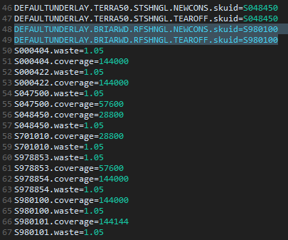

There are multiple property places that need to be in place for a main roofing style shingle products.
This is where you define how much coverage one bundle is or how much 1 sheet coverage is, Use square inch per bundle for bundles. If you are given feet, convert it to square inch. Use lengthperpeice if style doesn't come in bundle. In this case, pieceperbundle will be 1 and the length is filled.
Add the new style onto the screen. In tiles-def jump to screen 1502, add the style and create a putlist of its shingle colors. See add shingle below to get the Scodes for the shingles of that style.

Create image ticket to request image 216x153 size and add it to
/media/images/shingleRoofingType/
Name the image properly, ex: the first 7 characters shuld be filled followed by underscore = BRIARWD_XX.jpg
Further down tsShingles.properties, define the property values. You'll have to also create new scode for hipRidge for each color. As every shingle color has a specific hip ridge color (half true).
Each shingle sku has 4 basic properties as you see below.
in pair, one is for starter strip, and one for hip ridge. All colors of the same style will use the same starter strip.
But each color will be mapped to a different hip ridge sku, as hip ridge are on the outside, and they have to match the same color
as the shingle. See how to add hip ridge in next section.
One shingle usually has one unique hip ridge for it.
Example: CastleBrook color GreenOil shingle usually will map to a CastleBrook GreenOil hipRidge.
One hip ridge also has a few properties, more than shingle
Each roof style may need specific or default underlayment.properties. Define new underlayments here. See RoofUnderlayment.java to control which shingles get which underlayment. Use the if else, for special shingles that require certain underlayment.
